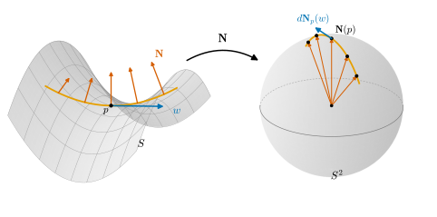

8.1 가우스 사상과 형태작용소
이 절의 목표
- 단위법벡터장이 주어진 곡면의 가우스 사상 \(\mathbf{N}\colon S \to S^2\)을 정의하고, 그 미분 \(d\mathbf{N}_p\)가 접평면 \(T_pS\)에서 자기 자신으로 가는 선형변환임을 보일 수 있다.
- 매개화에서 \(d\mathbf{N}_p(\mathbf{x}_u) = \mathbf{N}_u\), \(d\mathbf{N}_p(\mathbf{x}_v) = \mathbf{N}_v\)로 \(d\mathbf{N}_p\)를 계산할 수 있다.
- 내적공간의 자기수반 선형변환을 정의하고 행렬로 판정하며, \(d\mathbf{N}_p\)가 자기수반임을 증명할 수 있다.
- 형태작용소 \(W_p = -d\mathbf{N}_p\)를 정의하고 기준 예제에서 계산하며, 법벡터를 바꾸면 부호가 바뀜을 설명할 수 있다.
선수 지식
- 정의 7.5.1 (단위법벡터와 단위법벡터장), 식 (7.5.1), 예 7.5.2 (기준 예제의 단위법벡터), 명제 7.5.3, 정리 7.5.5 (방향과 단위법벡터장)
- 정의 6.2.1 (접평면), 식 (6.2.3), 정의 6.4.1 (사상의 미분), 명제 6.4.2, 예 6.4.6, 명제 6.3.10
- 정의 7.1.1 (제1기본형식), 예 7.1.5 (원환면의 \(E, F, G\))
- 정의 5.1.1 (곡률), 정의 4.4.2 (부호곡률)
- 정의 1.5.1 (내적), 정의 1.5.12 (그람 행렬), 정의 1.2.13 (선형사상의 행렬), 정리 2.2.14 (편미분의 교환)
동기
7장은 곡면의 방향을 연속인 단위법벡터장 \(\mathbf{N}\)으로 나타내는 데서 끝났다(정리 7.5.5). 그리고 이 \(\mathbf{N}\)을 곡면에서 단위구면으로 가는 사상으로 보고, 그 미분으로 곡면이 휘는 정도를 재겠다고 예고했다. 왜 하필 \(\mathbf{N}\)인가?
곡선을 돌아보자. 곡선의 곡률은 단위접벡터 \(\mathbf{t}\)가 방향을 바꾸는 빠르기 \(\abs{\mathbf{t}'}\)였다(정의 5.1.1). 곡선이 한 점에서 가리키는 방향은 접선이고, 곡률은 접선이 도는 빠르기다. 곡면이 한 점에서 “가리키는” 것은 접평면 \(T_pS\)다. 그런데 \(T_pS\)는 \(\mathbf{N}(p)\)에 수직인 평면이므로, 접평면이 도는 것은 \(\mathbf{N}\)이 도는 것과 같다. 그러므로 곡면이 휘는 정도는 점이 움직일 때 \(\mathbf{N}\)이 얼마나 빨리 변하는가로 재야 한다.
곡선과 다른 점이 하나 있다. 곡선 위에서는 움직일 수 있는 방향이 앞뒤 하나뿐이지만, 곡면 위에서는 \(p\)에서 나가는 방향이 무수히 많고 \(\mathbf{N}\)이 변하는 빠르기도 방향마다 다르다. 원기둥에서 축 방향으로 움직이면 \(\mathbf{N}\)은 전혀 변하지 않고, 둘레 방향으로 움직이면 \(\mathbf{N}\)은 원의 법선처럼 돈다. 그래서 휘어짐은 수 하나가 아니라 “방향 \(w\)를 받아 그 방향으로의 \(\mathbf{N}\)의 변화율을 내놓는” 대응이다. 그 대응이 선형사상 \(d\mathbf{N}_p\)이고, 이 절의 주인공이다.

가우스 사상
단위법벡터장 \(\mathbf{N}\colon O \to \R^3\)(정의 7.5.1)의 값은 길이가 \(1\)이므로 모두 단위구면 위에 있다. 이 장에서 \(S^2\)는 반지름 \(1\)인 구면 \(S^2(1) = \{x \in \R^3 : \abs{x} = 1\}\)이다.
정의 8.1.1 (가우스 사상, Gauss map). \(S\)가 정칙곡면이고 \(O \subseteq S\)가 열린집합이며 \(\mathbf{N}\)이 \(O\) 위의 단위법벡터장이라 하자. \(\mathbf{N}\)을 단위구면으로 가는 사상 \(\mathbf{N}\colon O \to S^2\)으로 볼 때, 이것을 \(\mathbf{N}\)이 정하는 \(O\)의 가우스 사상(Gauss map)이라 한다. \(S\)가 방향이 주어진 곡면이고 \(\mathbf{N}\)이 그 방향의 단위법벡터장이면(정리 7.5.5) \(\mathbf{N}\colon S \to S^2\)을 \(S\)의 가우스 사상이라 한다.
가우스 사상은 매끄러운 사상이다. 명제 7.5.3(c)에 의해 \(\mathbf{N}\)의 세 성분은 매끄러운 함수이므로, \(\mathbf{x}(U) \subseteq O\)인 매개화 \(\mathbf{x}\)에 대해 \(\mathbf{N} \circ \mathbf{x}\colon U \to \R^3\)이 매끄럽고, 명제 6.3.10(a)에 의해 \(\mathbf{N}\colon O \to S^2\)은 곡면 사이의 매끄러운 사상이다. \(S\)가 가향이 아니어도 매개화의 상 \(\mathbf{x}(U)\) 위에서는 \(\mathbf{N}_{\mathbf{x}}\)(식 (7.5.1))가 단위법벡터장이므로(명제 7.5.3(a)) 가우스 사상 \(\mathbf{N}_{\mathbf{x}}\colon \mathbf{x}(U) \to S^2\)이 있다. 이 장의 결과는 대부분 한 점 근처의 성질이므로 이것으로 충분하다. \(\mathbf{N}\) 대신 \(-\mathbf{N}\)을 쓰면 가우스 사상은 대척사상 \(q \mapsto -q\)(예 6.3.12(a))와 합성한 것으로 바뀐다.
예 8.1.2 (기준 예제의 가우스 사상). 가우스 사상의 상 \(\mathbf{N}(O) \subseteq S^2\)을 가우스 상이라 부르자.
- (a) 평면. \(P = \{q : \inner{q - q_0}{n_0} = 0\}\), \(\abs{n_0} = 1\)이면 모든 점에서 \(T_qP = n_0^\perp\)이므로(예 6.2.7(a)) 상수 \(\mathbf{N} \equiv n_0\)이 단위법벡터장이다. 가우스 상은 한 점 \(\{n_0\}\)이다.
- (b) 구면. \(S^2(r)\)의 바깥쪽 \(\mathbf{N}(p) = p/r\)(예 7.5.2(a))에서 가우스 사상은 \(p \mapsto p/r\), 곧 미분동형사상 \(S^2(r) \to S^2(1)\)이다(예 6.3.12(a)). 가우스 상은 \(S^2\) 전체다.
- (c) 원기둥. \(C_r = \{x^2 + y^2 = r^2\}\)의 바깥쪽 \(\mathbf{N}(x, y, z) = (x, y, 0)/r\)(예 7.5.2(b))에서 가우스 상은 적도 \(\{(a, b, 0) : a^2 + b^2 = 1\}\)이다. \(z\)축에 평행한 직선(모선) 위에서 \(\mathbf{N}\)이 상수이므로 모선 하나가 통째로 한 점으로 간다.
- (d) 안장면. \(\mathbf{x}(u, v) = (u, v, u^2 - v^2)\), \((u, v) \in \R^2\)의 위쪽 \(\mathbf{N} = \mathbf{N}_{\mathbf{x}}\)은 예 7.5.2(e)에 \(f_u = 2u\), \(f_v = -2v\)를 넣은 것이다.
- 이 사상은 단사이고 가우스 상은 열린 위쪽 반구 \(\{(a, b, c) \in S^2 : c \gt 0\}\)이다. \(n = (a, b, c) \in S^2\), \(c \gt 0\)이 \(\mathbf{N}(\mathbf{x}(u, v))\)와 같을 필요충분조건은 두 벡터가 같은 단위벡터의 양수배라는 것, 곧 \((-2u, 2v) = (a/c, b/c)\)이고, 이 식은 \((u, v) = (-a/(2c),\ b/(2c))\) 하나로 풀린다. \(\mathbf{N}\)의 셋째 성분은 늘 양수이므로 다른 점은 상에 없다.
가우스 상은 한 점, 대원, 구면 전체, 반구로 여러 가지다. “곡면이 많이 휠수록 가우스 상이 넓다”는 직관은 8.4절에서 가우스 곡률로 정확해진다.
검증: verify/v-8-1-gauss-map.py
비예 8.1.3 (뫼비우스 띠 전체의 가우스 사상은 없다). 예 7.5.9의 뫼비우스 띠 \(M\)에는 \(M\) 전체에서 정의된 단위법벡터장이 없으므로(명제 7.5.10), 정의 8.1.1의 뜻으로 \(M \to S^2\)인 가우스 사상도 없다. 중심원을 따라 \(\mathbf{N}_{\mathbf{x}}\)를 연속적으로 이어 가면 한 바퀴 뒤에 처음의 \(-\mathbf{N}_{\mathbf{x}}\)가 되어 버린다(그림 7.5.1). 그러나 각 조각 \(\mathbf{x}(U_a)\) 위에는 가우스 사상 \(\mathbf{N}_{\mathbf{x}|_{U_a}}\)가 있고, 두 조각의 것은 겹치는 곳에서 부호만 다르다(명제 7.5.3(b)). 그래서 한 점 근처의 계산은 비가향 곡면에서도 할 수 있다. 대신 부호가 법벡터에 달린 양을 다룰 때마다 어느 \(\mathbf{N}\)을 썼는지 밝혀야 한다(비고 8.1.14).
가우스 사상의 미분
가우스 사상이 매끄러우므로 각 점에서 미분 \(d\mathbf{N}_p\colon T_pS \to T_{\mathbf{N}(p)}S^2\)이 있다(정의 6.4.1). \(w = \alpha'(0)\)이면 \(d\mathbf{N}_p(w) = (\mathbf{N} \circ \alpha)'(0)\), 곧 곡선 \(\alpha\)를 따라 법벡터가 변하는 속도다. 이 사상의 정의역과 공역은 사실 같은 평면이다.
명제 8.1.4 (\(d\mathbf{N}_p\)는 \(T_pS\)의 선형변환이다). \(\mathbf{N}\colon O \to S^2\)이 가우스 사상이고 \(p \in O\)라 하자.
- (a) \(T_{\mathbf{N}(p)}S^2 = T_pS\)이다. 따라서 \(d\mathbf{N}_p\)는 \(T_pS\)에서 \(T_pS\)로 가는 선형사상, 곧 \(d\mathbf{N}_p \in \End(T_pS)\)이다.
- (b) \(\mathbf{x}\colon U \to S\)가 매개화이고 \(\mathbf{x}(U) \subseteq O\), \(\mathbf{x}(q) = p\)라 하자. \(\mathbf{N}_u = (\mathbf{N} \circ \mathbf{x})_u\), \(\mathbf{N}_v = (\mathbf{N} \circ \mathbf{x})_v\)로 쓰면
- 이다. 특히 \(d\mathbf{N}_p(\mathbf{x}_u) = \mathbf{N}_u\), \(d\mathbf{N}_p(\mathbf{x}_v) = \mathbf{N}_v\)이다.
증명. (a) 식 (6.2.3)(\(r = 1\))에서 \(T_{\mathbf{N}(p)}S^2 = \mathbf{N}(p)^\perp\)이다. 한편 \(\mathbf{N}(p)\)는 \(T_pS\)에 수직이므로 \(T_pS \subseteq \mathbf{N}(p)^\perp\)이다. \(T_pS\)는 2차원이고(명제 6.2.4) \(\mathbf{N}(p)^\perp\)은 \(\R^3\)에서 영이 아닌 벡터의 직교여공간이라 2차원이므로 둘은 같다. \(d\mathbf{N}_p\)가 선형인 것은 명제 6.4.2다.
(b) 작은 \(\varepsilon\)에 대해 \(\beta(t) = q + t(a, b)\)는 \(U\) 안의 곡선이고 \(\alpha = \mathbf{x} \circ \beta\)는 \(\alpha(0) = p\), \(\alpha'(0) = D\mathbf{x}(q)(a, b) = a\,\mathbf{x}_u + b\,\mathbf{x}_v\)인 \(O\) 위의 곡선이다. \((\mathbf{N} \circ \alpha)(t) = (\mathbf{N} \circ \mathbf{x})(q + t(a, b))\)이므로 연쇄법칙(정리 2.2.1)에서 \((\mathbf{N} \circ \alpha)'(0) = a\,\mathbf{N}_u(q) + b\,\mathbf{N}_v(q)\)이다. 정의 (6.4.1)에 의해 이것이 \(d\mathbf{N}_p(a\,\mathbf{x}_u + b\,\mathbf{x}_v)\)이다.
(a)는 직접 확인할 수도 있다. \(\inner{\mathbf{N} \circ \mathbf{x}}{\mathbf{N} \circ \mathbf{x}} = 1\)을 \(u\)로 미분하면 \(2\inner{\mathbf{N}_u}{\mathbf{N}} = 0\)이므로 \(\mathbf{N}_u \perp \mathbf{N}\), 곧 \(\mathbf{N}_u \in T_pS\)이다. 단위벡터의 변화율은 늘 자기 자신에 수직이다(따름정리 4.1.12). 또 \(-\mathbf{N}\)의 미분은 \(d(-\mathbf{N})_p = -d\mathbf{N}_p\)이다.
예 8.1.5 (\(d\mathbf{N}_p\)의 계산). (8.1.2)로 계산한다. 필요한 편미분은 모두 7장에서 구했다.
- (a) 평면. \(\mathbf{N}\)이 상수이므로 \(\mathbf{N}_u = \mathbf{N}_v = 0\)이고 \(d\mathbf{N}_p = 0\)이다.
- (b) 구면(바깥쪽). \(\mathbf{N} \circ \mathbf{x} = \mathbf{x}/r\)이므로 \(\mathbf{N}_\theta = \mathbf{x}_\theta/r\), \(\mathbf{N}_\varphi = \mathbf{x}_\varphi/r\)이고, (8.1.2)에서 모든 \(w \in T_pS^2(r)\)에 대해 \(d\mathbf{N}_p(w) = w/r\), 곧 \(d\mathbf{N}_p = \tfrac1r\id\)이다. 좌표 없이도 된다. \(\mathbf{N}\)은 선형사상 \(q \mapsto q/r\)의 제한이므로 예 6.4.6에서 바로 \(d\mathbf{N}_p(w) = w/r\)이다.
- (c) 원기둥(바깥쪽). \(\mathbf{N} \circ \mathbf{x} = (\cos u, \sin u, 0)\)이므로 \(\mathbf{N}_u = (-\sin u, \cos u, 0) = \mathbf{x}_u/r\), \(\mathbf{N}_v = 0\)이다. 곧 \(d\mathbf{N}_p(\mathbf{x}_u) = \mathbf{x}_u/r\), \(d\mathbf{N}_p(\mathbf{x}_v) = 0\)이다. 둘레 방향으로는 \(\mathbf{N}\)이 돌고 축 방향으로는 그대로다.
- (d) 안장면의 원점(위쪽). (8.1.1)을 \(u\)로 미분하면 \(\mathbf{N}_u = (-2, 0, 0)/\sqrt{1 + 4u^2 + 4v^2} - 4u\,(-2u, 2v, 1)/(1 + 4u^2 + 4v^2)^{3/2}\)이고, 원점에서 둘째 항이 사라져 \(\mathbf{N}_u(0, 0) = (-2, 0, 0)\)이다. 같은 방식으로 \(\mathbf{N}_v(0, 0) = (0, 2, 0)\)이다. 원점에서 \(\mathbf{x}_u = (1, 0, 2u) = e_1\), \(\mathbf{x}_v = (0, 1, -2v) = e_2\)이므로 \(d\mathbf{N}_0(e_1) = -2e_1\), \(d\mathbf{N}_0(e_2) = 2e_2\)이다. 따라서 \(w = \cos\beta\,e_1 + \sin\beta\,e_2\)이면 \(d\mathbf{N}_0(w) = -2\cos\beta\,e_1 + 2\sin\beta\,e_2\)이다(그림 8.1.1).
- (e) 원환면(\(\mathbf{N}_{\mathbf{x}}\), 안쪽). \(\mathbf{N} \circ \mathbf{x} = -(\cos u\cos v,\ \cos u\sin v,\ \sin u)\)(예 7.5.2(c))를 미분하고 예 7.1.5의 \(\mathbf{x}_u = r(-\sin u\cos v, -\sin u\sin v, \cos u)\), \(\mathbf{x}_v = (R + r\cos u)(-\sin v, \cos v, 0)\)와 비교하면 \[ \begin{aligned} \mathbf{N}_u &= -(-\sin u\cos v,\ -\sin u\sin v,\ \cos u) = -\frac1r\,\mathbf{x}_u,\\ \mathbf{N}_v &= -(-\cos u\sin v,\ \cos u\cos v,\ 0) = -\frac{\cos u}{R + r\cos u}\,\mathbf{x}_v \end{aligned} \] 이다.
다섯 예 모두에서 \(d\mathbf{N}_p\)는 서로 수직인 두 방향을 각각 자기 방향의 배수로 보냈다. 우연이 아니다. 아래에서 이 현상 뒤에 있는 성질(자기수반성)을 증명하고, 8.3절에서 그 결과를 끌어낸다.
검증: verify/v-8-1-gauss-map.py
자기수반 선형변환
1장에서 내적과 그람 행렬을 다뤘지만(정의 1.5.1, 정의 1.5.12), 내적과 잘 어울리는 선형변환은 다루지 않았다. 이 장에 필요한 만큼을 여기서 정의한다. 이 소절에서 \(V\)는 유한차원 내적공간이고 내적을 \(\inner{\cdot}{\cdot}\)으로 쓴다. 곡면에서는 \(V = T_pS\)에 제1기본형식(정의 7.1.1)을 준다.
정의 8.1.6 (자기수반 선형변환, self-adjoint linear map). \(A \in \End(V)\)가 모든 \(v, w \in V\)에 대하여
\[ \inner{Av}{w} = \inner{v}{Aw} \]
를 만족하면 \(A\)를 (이 내적에 대해) 자기수반(self-adjoint)이라 한다.
정의는 내적에 달려 있다. 같은 \(A\)라도 다른 내적에 대해서는 자기수반이 아닐 수 있다(연습 8.1.3). 판정은 기저에서 하면 된다.
명제 8.1.7 (자기수반의 판정). \(A \in \End(V)\)이고 \((b_1, \dots, b_n)\)이 \(V\)의 기저라 하자.
- (a) 모든 \(i, j\)에서 \(\inner{Ab_i}{b_j} = \inner{b_i}{Ab_j}\)이면 \(A\)는 자기수반이다.
- (b) 그람 행렬을 \(g_{ij} = \inner{b_i}{b_j}\), \(A\)의 행렬을 \(Ab_j = \sum_i A^i_j\,b_i\)(정의 1.2.13)로 쓰면
- 이다. 따라서 \(A\)가 자기수반일 필요충분조건은 \(k\)행 \(j\)열 성분이 \(\sum_i g_{ki}A^i_j\)인 행렬이 대칭인 것이다.
- (c) 특히 기저가 정규직교이면 \(A\)가 자기수반일 필요충분조건은 행렬 \((A^i_j)\)가 대칭인 것이다.
증명. (a) \(\phi(v, w) = \inner{Av}{w} - \inner{v}{Aw}\)는 \(A\)의 선형성과 내적의 쌍선형성에 의해 쌍선형이다. \(v = \sum_i v^i b_i\), \(w = \sum_j w^j b_j\)이면 \(\phi(v, w) = \sum_{i,j} v^iw^j\,\phi(b_i, b_j) = 0\)이다. (b) \(\inner{Ab_j}{b_k} = \inner{\sum_i A^i_j b_i}{b_k} = \sum_i A^i_j\,g_{ik}\)이고 \(g_{ik} = g_{ki}\)이다. 같은 식에서 \(\inner{b_j}{Ab_k} = \inner{Ab_k}{b_j} = \sum_i g_{ji}A^i_k\)이므로, (a)의 조건은 \(\sum_i g_{ki}A^i_j = \sum_i g_{ji}A^i_k\)(모든 \(j, k\)), 곧 행렬의 대칭성이다. 거꾸로 \(A\)가 자기수반이면 이 등식은 정의에서 바로 나온다. (c) 정규직교이면 \(g_{ki} = \delta_{ki}\)(정의 1.5.8)이므로 \(\sum_i g_{ki}A^i_j = A^k_j\)이다.
예 8.1.8 (자기수반 변환). \(\R^2\)에 표준 내적을 준다. 표준기저는 정규직교이므로 명제 8.1.7(c)로 판정한다. (a) 대칭행렬 \(\begin{pmatrix} a & b \\ b & c \end{pmatrix}\)이 나타내는 변환, 특히 대각행렬은 자기수반이다. (b) 예 1.2.7의 사영 \(P\)는 행렬이 \(\tfrac12\begin{pmatrix} 1 & 1 \\ 1 & 1 \end{pmatrix}\)이므로 자기수반이다. 대각선 위로의 정사영이다. (c) 스칼라배 \(\lambda\,\id_V\)는 어떤 내적에 대해서도 자기수반이다. \(\inner{\lambda v}{w} = \lambda\inner{v}{w} = \inner{v}{\lambda w}\)이기 때문이다.
비예 8.1.9 (회전과 층밀림). (a) \(90^\circ\) 회전 \(J\)(식 (4.4.1))는 \(\inner{Je_1}{e_2} = \inner{e_2}{e_2} = 1\)이지만 \(\inner{e_1}{Je_2} = \inner{e_1}{-e_1} = -1\)이므로 자기수반이 아니다. (b) 층밀림 \(\begin{pmatrix} 1 & 1 \\ 0 & 1 \end{pmatrix}\)은 정규직교기저에서 행렬이 대칭이 아니므로 자기수반이 아니다.
\(d\mathbf{N}_p\)는 자기수반이다
정리 8.1.10 (가우스 사상의 미분은 자기수반이다). \(\mathbf{N}\colon O \to S^2\)이 가우스 사상이고 \(p \in O\)이면, \(d\mathbf{N}_p\colon T_pS \to T_pS\)는 제1기본형식에 대해 자기수반이다. 곧 모든 \(w_1, w_2 \in T_pS\)에 대해 \(\inner{d\mathbf{N}_p(w_1)}{w_2} = \inner{w_1}{d\mathbf{N}_p(w_2)}\)이다.
이 정리가 말하는 것. \(w_1\) 방향으로 움직일 때 법벡터가 \(w_2\) 쪽으로 기우는 빠르기는, \(w_2\) 방향으로 움직일 때 \(w_1\) 쪽으로 기우는 빠르기와 같다. 이 대칭은 이계 편미분의 대칭 \(\mathbf{x}_{uv} = \mathbf{x}_{vu}\)에서 온다.
증명 아이디어: \(\mathbf{N}\)이 \(\mathbf{x}_u\)와 \(\mathbf{x}_v\)에 수직이라는 두 항등식을 각각 \(v\)와 \(u\)로 미분하면, 두 식에 같은 항 \(\inner{\mathbf{N}}{\mathbf{x}_{uv}}\)가 나온다.
증명. \(p\)를 덮는 매개화의 정의역을 \(O\)의 역상으로 줄이면 \(\mathbf{x}(q) = p\), \(\mathbf{x}(U) \subseteq O\)인 매개화 \(\mathbf{x}\colon U \to S\)가 있다(\(\mathbf{x}\)는 연속이고 \(O\)는 \(S\)에서 열려 있다). 명제 8.1.7(a)에 의해 기저 \((\mathbf{x}_u, \mathbf{x}_v)\)의 쌍에서만 확인하면 되고, 같은 벡터의 쌍은 자명하므로 \((w_1, w_2) = (\mathbf{x}_u, \mathbf{x}_v)\)만 보면 된다. \(U\) 전체에서 \(\mathbf{N} \circ \mathbf{x}\)는 \(\mathbf{x}_u\), \(\mathbf{x}_v\)에 수직이다(정의 7.5.1).
\[ \inner{\mathbf{N} \circ \mathbf{x}}{\mathbf{x}_u} = 0, \qquad \inner{\mathbf{N} \circ \mathbf{x}}{\mathbf{x}_v} = 0. \]
첫 식을 \(v\)로, 둘째 식을 \(u\)로 미분하면(곱의 미분, 명제 2.2.5)
\[ \inner{\mathbf{N}_v}{\mathbf{x}_u} + \inner{\mathbf{N}}{\mathbf{x}_{uv}} = 0, \qquad \inner{\mathbf{N}_u}{\mathbf{x}_v} + \inner{\mathbf{N}}{\mathbf{x}_{vu}} = 0 \]
이다. \(\mathbf{x}\)는 매끄러우므로 \(\mathbf{x}_{uv} = \mathbf{x}_{vu}\)이고(정리 2.2.14), 따라서
이다. (8.1.2)에서 \(\mathbf{N}_u = d\mathbf{N}_p(\mathbf{x}_u)\), \(\mathbf{N}_v = d\mathbf{N}_p(\mathbf{x}_v)\)이므로 이것은 \(\inner{d\mathbf{N}_p(\mathbf{x}_u)}{\mathbf{x}_v} = \inner{\mathbf{x}_u}{d\mathbf{N}_p(\mathbf{x}_v)}\)이다.
증명에 매개화를 썼지만 결론은 매개화와 무관한 문장이다. 가운데 양 \(-\inner{\mathbf{N}}{\mathbf{x}_{uv}}\)는 8.5절에서 계수 \(M\)이라는 이름을 얻는다. 정리가 행렬의 대칭을 말하는 것은 아니다. 기저 \((\mathbf{x}_u, \mathbf{x}_v)\)가 정규직교가 아니면 행렬은 대칭이 아닐 수 있다.
예 8.1.11 (자기수반이지만 행렬은 대칭이 아니다). 안장면의 점 \(p = \mathbf{x}(\tfrac12, \tfrac12) = (\tfrac12, \tfrac12, 0)\)을 보자. 여기서 \(\mathbf{x}_u = (1, 0, 1)\), \(\mathbf{x}_v = (0, 1, -1)\)이므로 \(E = 2\), \(F = -1\), \(G = 2\)이고, (8.1.1)의 분모는 \(\sqrt3\)이다. 예 8.1.5(d)의 \(\mathbf{N}_u\) 식과 같은 방식으로 \(\mathbf{N}_v = (0, 2, 0)/\sqrt{1 + 4u^2 + 4v^2} - 4v\,(-2u, 2v, 1)/(1 + 4u^2 + 4v^2)^{3/2}\)이므로, 이 점에서
\[ \begin{aligned} \mathbf{N}_u &= \tfrac{1}{3\sqrt3}\big((-6, 0, 0) - (-2, 2, 2)\big) = \tfrac{1}{3\sqrt3}(-4, -2, -2) = -\tfrac{2}{3\sqrt3}\,(2\mathbf{x}_u + \mathbf{x}_v),\\ \mathbf{N}_v &= \tfrac{1}{3\sqrt3}\big((0, 6, 0) - (-2, 2, 2)\big) = \tfrac{1}{3\sqrt3}(2, 4, -2) = \tfrac{2}{3\sqrt3}\,(\mathbf{x}_u + 2\mathbf{x}_v) \end{aligned} \]
이다. 따라서 기저 \((\mathbf{x}_u, \mathbf{x}_v)\)에 대한 \(d\mathbf{N}_p\)의 행렬은 \(\tfrac{2}{3\sqrt3}\begin{pmatrix} -2 & 1 \\ -1 & 2 \end{pmatrix}\)로 대칭이 아니다. 그래도 \(\inner{d\mathbf{N}_p(\mathbf{x}_u)}{\mathbf{x}_v} = -\tfrac{2}{3\sqrt3}(2F + G) = 0\)과 \(\inner{\mathbf{x}_u}{d\mathbf{N}_p(\mathbf{x}_v)} = \tfrac{2}{3\sqrt3}(E + 2F) = 0\)은 같다. 그람 행렬을 곱하면 \(\begin{pmatrix} 2 & -1 \\ -1 & 2 \end{pmatrix} \cdot \tfrac{2}{3\sqrt3}\begin{pmatrix} -2 & 1 \\ -1 & 2 \end{pmatrix} = \tfrac{2}{3\sqrt3}\begin{pmatrix} -3 & 0 \\ 0 & 3 \end{pmatrix}\)으로 대칭이다(명제 8.1.7(b)). 또 \(\mathbf{x}_{uv} = 0\)이므로 (8.1.4)의 가운데 항은 \(0\)이다.
검증: verify/v-8-1-gauss-map.py
형태작용소
앞으로는 \(d\mathbf{N}_p\) 대신 그 부호를 바꾼 것을 기본 대상으로 삼는다. 왜 부호를 바꾸는지는 곡선과 비교하면 보인다(아래 비교 상자).
정의 8.1.12 (형태작용소, shape operator). \(\mathbf{N}\colon O \to S^2\)이 가우스 사상이고 \(p \in O\)이면
를 \(\mathbf{N}\)에 대한 \(p\)에서 \(S\)의 형태작용소(shape operator)라 한다. 바인가르텐 사상(Weingarten map)이라고도 한다.
정리 8.1.10에 의해 \(W_p\)는 자기수반이다. \(W_p\)는 \(\mathbf{N}\)을 고르면 정해지고, \(-\mathbf{N}\)을 쓰면 \(-W_p\)가 된다. 연결인 가향 곡면에는 단위법벡터장이 \(\pm\mathbf{N}\) 두 개뿐이므로(따름정리 7.5.7) 형태작용소도 부호를 빼면 하나다. 형태작용소가 곡면의 모양을 담는다는 첫 증거는 평면이다. 평면에서는 \(W_p = 0\)이다. 거꾸로 연결 곡면의 모든 점에서 \(W_p = 0\)이면 곡면은 평면의 일부다. 이것은 8.3절에서 더 일반적인 정리의 한 경우로 증명한다.
예 8.1.13 (기준 예제의 형태작용소). 예 8.1.5의 부호를 바꾸면 된다.
- (a) 평면: \(W_p = 0\).
- (b) 구면(바깥쪽 \(\mathbf{N} = \mathbf{x}/r\)): \(W_p = -\tfrac1r\id\). 안쪽 \(\mathbf{N}\)을 쓰면 \(W_p = \tfrac1r\id\)이다.
- (c) 원기둥(바깥쪽): \(W_p(\mathbf{x}_u) = -\tfrac1r\mathbf{x}_u\), \(W_p(\mathbf{x}_v) = 0\).
- (d) 안장면의 원점(위쪽): \(W_0(e_1) = 2e_1\), \(W_0(e_2) = -2e_2\).
- (e) 원환면(\(\mathbf{N}_{\mathbf{x}}\), 안쪽):
부호를 읽어 보자. 바깥쪽 법벡터의 구면은 \(\mathbf{N}\)과 반대쪽으로 휘므로 음수가 나왔다. 원환면의 \(\mathbf{x}_u\) 방향(관을 도는 방향)은 반지름 \(r\)인 원을 따라 관의 중심 쪽, 곧 \(\mathbf{N}_{\mathbf{x}}\) 쪽으로 휘므로 \(1/r \gt 0\)이다. 안장면은 \(e_1\) 방향(\(z = u^2\))으로는 위쪽 \(\mathbf{N}\) 쪽으로 휘고 \(e_2\) 방향(\(z = -v^2\))으로는 반대로 휜다. 이 해석은 8.2절에서 정리가 된다.
검증: verify/v-8-1-gauss-map.py
비고 8.1.14 (이 장의 법벡터 규약). 부호가 \(\mathbf{N}\)에 달린 양(형태작용소, 8.2절의 제2기본형식과 법곡률, 8.3절의 주곡률, 8.4절의 평균곡률)을 계산할 때마다 쓴 \(\mathbf{N}\)을 밝힌다. 기준 예제에서는 기준 매개화가 정하는 \(\mathbf{N}_{\mathbf{x}}\)를 쓴다(예 7.5.2).
- 구면과 원기둥: \(\mathbf{N}_{\mathbf{x}}\)는 바깥쪽이다.
- 원환면: \(\mathbf{N}_{\mathbf{x}}\)는 안쪽(관의 중심원 쪽)이다. 바깥쪽 방향 \(\grad f/\abs{\grad f}\)와 반대다.
- 그래프 곡면과 안장면: \(\mathbf{N}_{\mathbf{x}}\)는 위쪽(셋째 성분이 양수)이다.
- 회전면: \(\mathbf{N}_{\mathbf{x}} = (-z'\cos v,\ -z'\sin v,\ \rho')/\abs{\alpha'}\)이다.
비가향일 수 있는 곡면에서 한 점 근처를 계산할 때는 그 점을 덮는 매개화의 \(\mathbf{N}_{\mathbf{x}}\)를 쓴다.
요약
- 단위법벡터장 \(\mathbf{N}\)을 \(S^2\)으로 가는 사상으로 본 것이 가우스 사상이다. 방향이 없어도 매개화의 상에서는 \(\mathbf{N}_{\mathbf{x}}\)로 늘 국소적으로 있다. 평면·원기둥·구면·안장면의 가우스 상은 한 점, 대원, 구면 전체, 위쪽 반구다.
- \(T_{\mathbf{N}(p)}S^2 = T_pS\)이므로 \(d\mathbf{N}_p\)는 \(T_pS\)의 선형변환이고, \(d\mathbf{N}_p(\mathbf{x}_u) = \mathbf{N}_u\), \(d\mathbf{N}_p(\mathbf{x}_v) = \mathbf{N}_v\)로 계산한다.
- \(\inner{Av}{w} = \inner{v}{Aw}\)인 변환이 자기수반 변환이다. 정규직교기저에서는 행렬이 대칭이고, 일반 기저에서는 그람 행렬을 곱한 행렬이 대칭이다.
- \(\inner{\mathbf{N}_u}{\mathbf{x}_v} = -\inner{\mathbf{N}}{\mathbf{x}_{uv}} = \inner{\mathbf{N}_v}{\mathbf{x}_u}\)에서 \(d\mathbf{N}_p\)는 자기수반이다. 형태작용소 \(W_p = -d\mathbf{N}_p\)도 자기수반이고, \(\mathbf{N}\)을 \(-\mathbf{N}\)으로 바꾸면 부호가 바뀐다.
- 기준 예제: 평면 \(W = 0\), 구면(바깥쪽) \(W = -\tfrac1r\id\), 원기둥(바깥쪽) \(W(\mathbf{x}_u) = -\mathbf{x}_u/r\), \(W(\mathbf{x}_v) = 0\), 원환면(안쪽) (8.1.6), 안장면의 원점 \(W = \diag(2, -2)\).
다음 절에서는 형태작용소를 곡면 위의 곡선과 잇는다. 곡선이 \(p\)를 속도 \(w\)로 지나면 그 가속도의 법선 성분은 곡선에 관계없이 \(\inner{W_p(w)}{w}\)로 정해진다. 이 이차형식이 제2기본형식이고, 5장이 남긴 질문 “곡선의 곡률 가운데 곡면이 휘어서 생기는 몫”의 답이다.
연습문제
연습 8.1.1 ★ 꼭짓점을 뺀 원뿔 \(S = \{(u, v, \sqrt{u^2 + v^2}) : (u, v) \neq 0\}\)에 위쪽 \(\mathbf{N}\)을 준다. (a) 가우스 상을 구하여라. (b) 점 \(p = \mathbf{x}(\rho\cos\phi, \rho\sin\phi)\)에서 모선 방향 단위벡터 \(e_{\mathrm{r}} = (\cos\phi, \sin\phi, 1)/\sqrt2\)와 수평 단위벡터 \(e_{\mathrm{h}} = (-\sin\phi, \cos\phi, 0)\)에 대해 \(W_p(e_{\mathrm{r}})\), \(W_p(e_{\mathrm{h}})\)를 구하여라.
힌트
그래프 곡면의 \(\mathbf{N}\)(예 7.5.2(e))을 쓰고, 모선 \(t \mapsto \mathbf{x}(t\cos\phi, t\sin\phi)\)과 수평 원 \(\psi \mapsto \mathbf{x}(\rho\cos\psi, \rho\sin\psi)\)을 따라 \(\mathbf{N}\)을 미분한다.
풀이
\(f = \sqrt{u^2 + v^2}\)이면 \(f_u = u/f\), \(f_v = v/f\)이고 \(1 + f_u^2 + f_v^2 = 2\)이므로 \(\mathbf{N}(\mathbf{x}(u, v)) = (-u/f,\ -v/f,\ 1)/\sqrt2\)이다. 극좌표 \((u, v) = (\rho\cos\phi, \rho\sin\phi)\)로 쓰면 \(\mathbf{N} = (-\cos\phi, -\sin\phi, 1)/\sqrt2\)로 \(\rho\)에 무관하다.
(a) 셋째 성분이 늘 \(1/\sqrt2\)이고 앞의 두 성분은 반지름 \(1/\sqrt2\)인 원을 한 바퀴 돈다. 가우스 상은 \(S^2\)의 위도원 \(\{(a, b, c) \in S^2 : c = 1/\sqrt2\}\)(여위도 \(\pi/4\))이다.
(b) 모선 \(t \mapsto \mathbf{x}(t\cos\phi, t\sin\phi) = t(\cos\phi, \sin\phi, 1)\)의 속도는 \(\sqrt2\,e_{\mathrm{r}}\)이고 그 위에서 \(\mathbf{N}\)이 상수이므로 \(d\mathbf{N}_p(e_{\mathrm{r}}) = 0\), 곧 \(W_p(e_{\mathrm{r}}) = 0\)이다. 수평 원 \(\psi \mapsto \mathbf{x}(\rho\cos\psi, \rho\sin\psi)\)의 \(\psi = \phi\)에서의 속도는 \(\rho(-\sin\phi, \cos\phi, 0) = \rho\,e_{\mathrm{h}}\)이고, 그 위의 \(\mathbf{N} = (-\cos\psi, -\sin\psi, 1)/\sqrt2\)의 도함수는 \((\sin\phi, -\cos\phi, 0)/\sqrt2 = -e_{\mathrm{h}}/\sqrt2\)이다. 정의 (6.4.1)에서 \(d\mathbf{N}_p(\rho\,e_{\mathrm{h}}) = -e_{\mathrm{h}}/\sqrt2\)이므로 \(W_p(e_{\mathrm{h}}) = e_{\mathrm{h}}/(\sqrt2\,\rho)\)이다. 원기둥처럼 모선 방향으로는 휘지 않고, 꼭짓점에 가까울수록(\(\rho \to 0\)) 수평 방향으로 심하게 휜다.
검증: verify/v-8-1-gauss-map.py
연습 8.1.2 ★ 참인지 거짓인지 판별하고 이유를 대어라. (a) 연결 곡면의 가우스 상이 한 점이면 모든 점에서 \(d\mathbf{N}_p = 0\)이다. (b) 기저 \((\mathbf{x}_u, \mathbf{x}_v)\)에 대한 \(d\mathbf{N}_p\)의 행렬은 늘 대칭이다. (c) \(\mathbf{N}\)을 \(-\mathbf{N}\)으로 바꾸면 \(W_p\)는 \(-W_p\)가 된다. (d) 두 곡면의 가우스 상이 같으면 두 곡면은 강체운동으로 겹칠 수 있다.
풀이
(a) 참. \(\mathbf{N}\)이 상수이므로 모든 곡선 \(\alpha\)에서 \((\mathbf{N} \circ \alpha)' = 0\)이다.
(b) 거짓. 예 8.1.11. 자기수반성이 행렬의 대칭을 뜻하는 것은 정규직교기저에서뿐이다(명제 8.1.7).
(c) 참. \(d(-\mathbf{N})_p = -d\mathbf{N}_p\)이다.
(d) 거짓. 반지름이 다른 두 구면 \(S^2(1)\), \(S^2(2)\)(바깥쪽)는 가우스 상이 모두 \(S^2\)이지만 강체운동은 길이를 보존하므로 겹칠 수 없다. 원기둥 \(C_1\)과 \(C_2\)도 가우스 상이 같은 적도다.
연습 8.1.3 ★ \(\R^2\)에 내적 \(g(v, w) = 2v^1w^1 + v^2w^2\)를 준다. (a) 표준기저에서 행렬이 \(\begin{pmatrix} 0 & 1 \\ 1 & 0 \end{pmatrix}\)인 변환은 \(g\)에 대해 자기수반인가? (b) \(g\)에 대해 자기수반인 변환의 표준기저 행렬을 모두 구하여라.
풀이
표준기저의 그람 행렬은 \(g_{11} = 2\), \(g_{12} = 0\), \(g_{22} = 1\)이다. (8.1.3)의 행렬은 \(\big(\sum_i g_{ki}A^i_j\big) = \begin{pmatrix} 2A^1_1 & 2A^1_2 \\ A^2_1 & A^2_2 \end{pmatrix}\)이다.
(b) 이것이 대칭일 필요충분조건은 \(A^2_1 = 2A^1_2\)이다(명제 8.1.7(b)). 따라서 자기수반 변환의 행렬은 \(\begin{pmatrix} a & b \\ 2b & d \end{pmatrix}\) (\(a, b, d \in \R\)) 꼴 전체다.
(a) \(A^1_2 = A^2_1 = 1\)이므로 \(A^2_1 = 2A^1_2\)가 성립하지 않는다. 자기수반이 아니다. 직접 확인하면 \(g(Ae_1, e_2) = g(e_2, e_2) = 1\)이지만 \(g(e_1, Ae_2) = g(e_1, e_1) = 2\)이다. 표준 내적에서는 대칭행렬이라 자기수반이었다. 자기수반성은 내적에 달려 있다.
검증: verify/v-8-1-gauss-map.py
연습 8.1.4 ★ (그림 해석) 그림 8.1.1에서 \(w = \cos\beta\,e_1 + \sin\beta\,e_2\)라 하자. (a) 모든 \(\beta\)에서 \(\abs{d\mathbf{N}_0(w)} = 2\)임을 보여라. (b) \(d\mathbf{N}_0(w)\)가 \(w\)와 평행한 \(\beta \in [0, \pi)\)와 \(w\)에 수직인 \(\beta \in [0, \pi)\)를 모두 구하여라. (c) 그림에서 \(\alpha\)는 오른쪽 위로 가는데 \(\mathbf{N} \circ \alpha\)는 왼쪽 위로 가는 까닭을 설명하여라.
풀이
예 8.1.5(d)에서 \(d\mathbf{N}_0(w) = -2\cos\beta\,e_1 + 2\sin\beta\,e_2\)이다.
(a) \(\abs{d\mathbf{N}_0(w)}^2 = 4\cos^2\beta + 4\sin^2\beta = 4\)이다.
(b) 평면 \(T_0S = \Span\{e_1, e_2\}\) 안에서 두 벡터가 평행할 필요충분조건은 성분의 \(2 \times 2\) 행렬식이 \(0\)인 것이다: \(\cos\beta \cdot 2\sin\beta - \sin\beta \cdot(-2\cos\beta) = 2\sin 2\beta = 0\), 곧 \(\beta = 0, \pi/2\)이다. 이때 \(w\)는 \(e_1\) 또는 \(e_2\)이고 \(d\mathbf{N}_0(w) = \mp 2w\)이다. 수직일 필요충분조건은 \(\inner{w}{d\mathbf{N}_0(w)} = -2\cos^2\beta + 2\sin^2\beta = -2\cos 2\beta = 0\), 곧 \(\beta = \pi/4, 3\pi/4\)이다.
(c) \(\beta = \pi/6\)이면 \(w\)의 \(e_1\) 성분은 양수이지만 \(d\mathbf{N}_0(w) = (-\sqrt3, 1, 0)\)의 \(e_1\) 성분은 음수다. \(e_1\) 방향으로 가면 곡면이 위로 휘어 법벡터가 뒤(\(-e_1\) 쪽)로 기울고, \(e_2\) 방향으로 가면 아래로 휘어 법벡터가 앞(\(+e_2\) 쪽)으로 기운다. 그래서 가우스 상은 \(e_1\) 성분만 뒤집힌 방향으로 움직인다.
연습 8.1.5 ★★ 연습 7.1.6의 나선면 \(\{x\sin z - y\cos z = 0\}\)을 이번에는 \(\mathbf{x}(u, v) = (v\cos u,\ v\sin u,\ u)\)로 매개화한다. (a) \(\mathbf{x}\)가 나선면 안으로 가는 사상임을 확인하고 \(\mathbf{N}_{\mathbf{x}}\)를 구하여라. (b) \(d\mathbf{N}_p(\mathbf{x}_u)\), \(d\mathbf{N}_p(\mathbf{x}_v)\)를 \(\mathbf{x}_u, \mathbf{x}_v\)로 나타내고, 행렬이 대칭인 점을 모두 구하여라. (c) 그래도 \(d\mathbf{N}_p\)가 자기수반임을 직접 확인하여라.
힌트
\(\mathbf{x}_u = (-v\sin u, v\cos u, 1)\), \(\mathbf{x}_v = (\cos u, \sin u, 0)\)이고 \(E = 1 + v^2\), \(F = 0\), \(G = 1\)이다.
풀이
(a) \(x\sin z - y\cos z = v\cos u\sin u - v\sin u\cos u = 0\)이므로 \(\mathbf{x}(u, v)\)는 나선면 위의 점이다. 외적은 \(\mathbf{x}_u \times \mathbf{x}_v = (v\cos u \cdot 0 - 1 \cdot \sin u,\ 1 \cdot \cos u - (-v\sin u) \cdot 0,\ -v\sin^2 u - v\cos^2 u) = (-\sin u, \cos u, -v)\)이므로 \(\mathbf{N}_{\mathbf{x}} = (-\sin u, \cos u, -v)/\sqrt{1 + v^2}\)이다.
(b) \(\ell = \sqrt{1 + v^2}\)라 하면 \(\mathbf{N}_u = (-\cos u, -\sin u, 0)/\ell = -\mathbf{x}_v/\ell\)이다. 또 \(\mathbf{N}_v = (0, 0, -1)/\ell - v(-\sin u, \cos u, -v)/\ell^3 = \big(v\sin u,\ -v\cos u,\ -(1 + v^2) + v^2\big)/\ell^3 = -\mathbf{x}_u/\ell^3\)이다. (8.1.2)에서 \(d\mathbf{N}_p(\mathbf{x}_u) = -\ell^{-1}\mathbf{x}_v\), \(d\mathbf{N}_p(\mathbf{x}_v) = -\ell^{-3}\mathbf{x}_u\)이고 행렬은 \(\begin{pmatrix} 0 & -\ell^{-3} \\ -\ell^{-1} & 0 \end{pmatrix}\)이다. 대칭일 필요충분조건은 \(\ell^{-3} = \ell^{-1}\), 곧 \(\ell = 1\), \(v = 0\)(나선면의 축 위의 점)이다.
(c) \(\inner{d\mathbf{N}_p(\mathbf{x}_u)}{\mathbf{x}_v} = -\ell^{-1}G = -\ell^{-1}\)이고 \(\inner{\mathbf{x}_u}{d\mathbf{N}_p(\mathbf{x}_v)} = -\ell^{-3}E = -\ell^{-3}(1 + v^2) = -\ell^{-1}\)이다. 같다. 연습 7.1.6의 매개화 \(\mathbf{y}\)는 \(E = G\)인 등온 매개화라서 행렬이 대칭으로 나온다. 행렬의 대칭 여부는 매개화에 달려 있다.
검증: verify/v-8-1-gauss-map.py
연습 8.1.6 ★★ \(A\)가 \(3 \times 3\) 직교행렬(정의 5.4.1), \(b \in \R^3\), \(c \gt 0\)이고 \(\Phi(q) = cAq + b\)라 하자. \(S\)에 단위법벡터장 \(\mathbf{N}\)이 있고 \(\bar S = \Phi(S)\)라 하자. (a) \(\bar S\)는 정칙곡면이고 \(\bar{\mathbf{N}}(\Phi(q)) = A\,\mathbf{N}(q)\)는 \(\bar S\)의 단위법벡터장임을 보여라. (b) \(\bar{\mathbf{N}}\)에 대한 형태작용소가 \(\bar W_{\Phi(p)} = \tfrac1c\,A \circ W_p \circ A^{-1}\)임을 보여라. 특히 강체운동은 형태작용소를 “옮겨 놓을” 뿐이고, 곡면을 \(c\)배로 키우면 형태작용소는 \(1/c\)배가 된다. [dC §3-3 연습문제 13 변형]
힌트
\(\bar{\mathbf{N}} \circ \Phi = A \circ \mathbf{N}\)에 연쇄법칙(정리 6.4.8)을 쓴다.
풀이
(a) \(\Phi\)는 역사상 \(q \mapsto A^{-1}(q - b)/c\)를 갖는 \(\R^3\)의 미분동형사상이다. \(S\)의 매개화 \(\mathbf{x}\)에 대해 \(\Phi \circ \mathbf{x}\)는 매끄럽고, \(\Phi\)가 위상동형사상이므로 \(\mathbf{x}(U) = V \cap S\)의 상 \(\Phi(V) \cap \bar S\)로의 위상동형사상이며, \(D(\Phi \circ \mathbf{x}) = cA\,D\mathbf{x}\)가 단사이다. 따라서 \(\bar S\)는 정칙곡면이고 \(T_{\Phi(p)}\bar S = cA(T_pS) = A(T_pS)\)이다. \(A\)는 내적을 보존하므로(명제 5.4.2) \(\abs{A\mathbf{N}} = 1\)이고 \(w \in T_pS\)에 대해 \(\inner{A\mathbf{N}(p)}{Aw} = \inner{\mathbf{N}(p)}{w} = 0\)이다. \(\bar{\mathbf{N}} = A \circ \mathbf{N} \circ \Phi^{-1}\)은 연속이므로 단위법벡터장이다.
(b) \(\bar{\mathbf{N}} \circ \Phi|_S = A \circ \mathbf{N}\)이다. 선형사상의 미분은 자기 자신이므로(예 6.4.6) 연쇄법칙에서 \(d\bar{\mathbf{N}}_{\Phi(p)} \circ (cA) = A \circ d\mathbf{N}_p\)이고, 따라서 \(d\bar{\mathbf{N}}_{\Phi(p)} = \tfrac1c\,A \circ d\mathbf{N}_p \circ A^{-1}\)이다. 부호를 바꾸면 결론이다. 예: 바깥쪽 법벡터의 \(S^2(1)\)을 \(c\)배 하면 \(S^2(c)\)와 그 바깥쪽 법벡터가 되고, \(\bar W = \tfrac1c A(-\id)A^{-1} = -\tfrac1c\id\)로 예 8.1.13(b)와 맞는다.
검증: verify/v-8-1-gauss-map.py